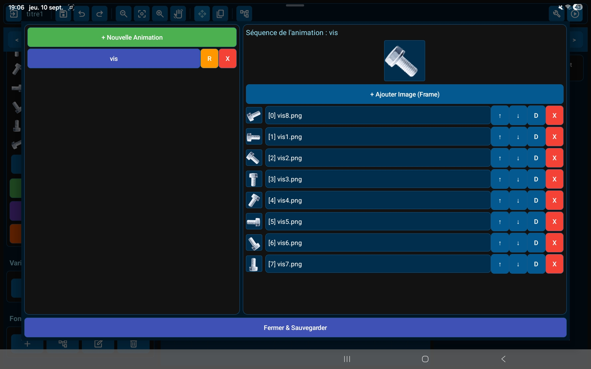
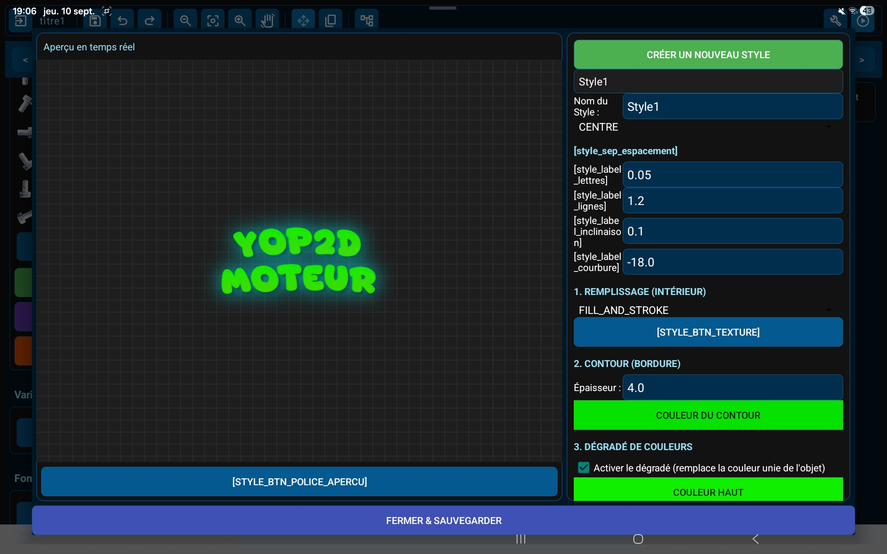

プロジェクトと書き出し

ホーム画面では、サムネイル付きでプロジェクトを確認でき、サンプルゲームを開いてすぐに学べます。ボタンひとつで、Yop2D はゲームを端末上で単体の APK ファイルにします。パソコンもサーバーも外部ツールも不要です。
ビジュアルレベルエディター

プロ向けエンジンを参考にした、タッチ操作向けの画面です。オブジェクトをタップして選択し、ドラッグでシーンをスクロール、ハンドルで移動・拡大縮小・回転ができます。オブジェクトはワンタップで非表示やロックにでき、誤って動かす心配がありません。
タイルで作るレベル

タイルセットを読み込み、1 マスずつレベルを描いて、固いタイルを一度指定するだけ。当たり判定は自動なので、横スクロールアクションや見下ろし型のマップをすばやく作れます。
リアルタイムアニメーションエディター

読み込んだフレームをひと目で確認し、2D アニメーションをエンジン内でリアルタイムにプレビューできます。ゲーム中のアニメーションも、ほかのすべてと同じく一時停止やスローモーションに従います。
タイトルと文字エフェクトを内蔵

グラデーション、縁取り、ネオン、影、立体、テクスチャ、カーブなどの装飾タイトルをエンジン内で直接作成。ほかのアプリで重い文字画像を作る必要がないので、APK も軽いままです。
ビジュアルノードシステム

コードを書く必要はありません。ゲームのロジックは、つなぎ合わせたビジュアルブロック（ノード）で作ります。移動、物理、アニメーション、サウンド、会話、インベントリ、カメラ、タイマー、条件をカバーする 123 個のノードをすぐに使えます。ノードの列をまとめて折りたためるので、作業スペースもすっきり保てます。
ゲームの頭脳

ノードを選んで設定します。対象オブジェクトを選び、値を調整し、画像・サウンド・アニメーションをリストから選ぶだけ。=score + 1 のような簡単な式で、変数、指の位置、ジョイスティック、時間、オブジェクトのプロパティをどこでも使えます。
サンプルゲーム付き

エンジンには 3 つの小さなサンプルゲームが付いています：横スクロールアクション、宇宙船ゲーム、パララックススクロールのシーン。開いて遊び、手を加えてみれば、仕組みがよくわかります。
タブレットでもスマホでも

いちばん快適なのはタブレットですが、Yop2D は横向きの Android スマホでも動きます。小さな画面ではパネルがコンパクトな配置に切り替わり、シーンにできるだけ広いスペースを残します。
エンジンの機能
コード不要のビジュアルノード
ブロックをつなぐだけでゲームのロジックを作れる 123 個のノード。必要なときは簡単な式も使えます。
オフラインで APK 書き出し
ゲームはタブレットやスマホ上で本物の Android アプリになります。インターネットがなくても大丈夫です。
シーンをオブジェクトに（プレハブ）
どのシーンも、別のシーンの中にオブジェクトとして置けます。同じ敵を並べたり、部品を使い回したりするのに最適です。
タグでまとめて操作
オブジェクトにタグを付ければ、ひとつのノードで全部を同時に操作できます。敵を全員動かす、コインを全部消す、など。
物理演算と動き
重力、バウンド、衝撃、当たり判定、接地判定、さらに敵 AI 用の追いかける・逃げる動き。
タイルマップ
タイルセットでレベルを描き、固いタイルを一度指定するだけで当たり判定は自動です。
変数・インベントリ・セーブ
スコア、ライフ、インベントリのリスト、そしていつでもゲームの状態を保存・復元できます。
タッチ操作
仮想ジョイスティック、ボタン、HUD にマルチタッチ対応。移動しながらジャンプもできます。
一時停止とスローモーション
ゲーム全体が一時停止とスローモーションに従い、ポーズメニューはそのまま動きます。
会話・サウンド・カメラ
テキスト会話、効果音、音楽、プレイヤーを追うカメラ、画面の揺れ、バイブレーション。
パーティクルと画面エフェクト
12 種類のパーティクル（爆発、炎、煙、雨、雪、ハイパースペース…）、やわらかい光、画面フラッシュ、色合い、周辺減光、フェード。
初心者向けガイド
初心者によくある質問に、エンジンの実際のノードを使って一歩ずつ答えるガイドです。Yop2D の中でも、ノードエディターのヘルプから読めます。
ノードリファレンス
Yop2D の 123 個すべてのノードを 1 ページに。各ノードの働き、設定、出力、使用例を紹介します。名前はノードエディターの表示とまったく同じです。
Yop2D とほかのエンジンの比較
世の中には優れたゲームエンジンがたくさんあります。Yop2D にできないことも含めて、選ぶ手助けになる正直な比較をまとめました。
| エンジン | どこで作るか | プログラムの方法 | 2D / 3D | 価格 | ゲームが動く環境 |
|---|---|---|---|---|---|
| Yop2D | Android アプリ（タブレット、スマホ）、オフライン可 | ビジュアルノード、コード不要 | 2D | 無料、広告なし | Android（端末上で APK を作成） |
| GDevelop | パソコン、ウェブブラウザー、モバイルアプリ | イベント、コード不要（JavaScript も可） | 2D と 3D | 無料・オープンソース。オンラインサービスを増やす有料プランあり | Android、iOS、ウェブ、パソコン（モバイル版はオンラインで作成） |
| Construct 3 | ウェブブラウザー（タブレットでも可） | イベントシート、コード不要（JavaScript も可） | 主に 2D | 有料サブスクリプション。機能制限付きの無料版あり | Android、iOS、ウェブ、パソコン（モバイル版はオンラインで作成） |
| Godot | パソコン、ウェブブラウザー、Android 版エディター | コード（GDScript、C#） | 2D と 3D | 無料・オープンソース | Android、iOS、ウェブ、パソコン |
2026 年 9 月時点の簡単なまとめです。エンジンは変化が速いので、詳しくは各エンジンの公式サイトをご確認ください。
Yop2D が向いているのは…
- パソコンがなく、Android のタブレットかスマホしか持っていない人；
- インターネットがなくても、どこでも作りたい人；
- プログラミング言語を覚えたくない人；
- 広告もサブスクリプションもなく、ゲームに透かしも入らない無料ツールがほしい人；
- 作ったゲームを Android アプリとして友だちや家族、生徒と共有したい人。
Yop2D に（まだ）できないこと
- ゲームが動くのは Android だけです。iPhone、ウェブ、パソコン版はありません。
- Google Play での公開に必要な AAB 形式の書き出しはまだできません。今後のバージョンで対応予定です。
- 2D のみです。
- テスト中の新しいエンジンです。コミュニティやチュートリアルはまだ少なく、不具合が起きることもあります。
- 上級プログラマー向けのスクリプト言語はありません。すべてノードで作ります。
- エンジンは無料ですが、ソースコードは公開されていません。
ほかのエンジンのほうが合う場合
- iPhone、ウェブ、パソコン向けのゲームが必要：GDevelop、Construct、Godot。
- 本格的にプログラミングを学びたい、3D ゲームを作りたい：Godot。
- パソコンで作業し、大きなコミュニティのあるノーコードエンジンがほしい：GDevelop または Construct。
よくある質問
Yop2D とは？
Yop2D は Android 用の無料ノーコード 2D ゲームエンジンです。プログラミングの知識がなくても、タブレットやスマホでビジュアルノードを使って本格的なゲームを作り、そのまま端末上で APK として書き出せます。
Yop2D は本当に無料？広告はある？
はい、Yop2D は完全無料です。サブスクリプションもアプリ内課金も隠れた費用もありません。Yop2D に広告はなく、これからも入ることはありません。
作ったゲームは誰のもの？販売できる？
作ったゲームはあなたのものです。許可を求めることも、Yop2D に支払うこともなく、手元に残す、プレゼントする、共有する、販売するのも自由です。
ゲームに Yop2D のロゴや透かしは入る？
入りません。書き出したゲームには、Yop2D のロゴ、起動画面、透かしは一切含まれません。
Yop2D はオープンソース？
いいえ。Yop2D は無料で使えますが、ソースコードは公開されていません。あなたのゲームには何の影響もなく、すべてあなたのものです。
プログラミングができなくても大丈夫？
まったく問題ありません。Yop2D はコードの代わりに、つなぎ合わせるビジュアルノードを使います。初心者や、ゲーム作りそのものに集中したい人のために作られています。初心者向けガイドで一歩ずつ学べます。
どの端末で動く？
Android 7.0 以上のタブレットとスマホです。いちばん快適なのはタブレットで、スマホでは横向き・コンパクト表示で動きます。iPhone、iPad、パソコン版はありません。
パソコンやインターネットは必要？
いいえ。Yop2D は端末上でゲームを作り、単体の APK として書き出します。完全オフラインで、クラウドでのビルドもアカウント登録も不要です。
作ったゲームを Google Play で公開できる？
今はまだ直接はできません。Yop2D が書き出すのは APK ファイルなので、インストールや共有、itch.io など APK を受け付けるサイトでの公開ができます。Google Play では自分の鍵で署名した AAB 形式が必要で、この書き出しは今後のバージョンで対応予定です。
Yop2D のゲームを iPhone やウェブ、パソコンで遊べる？
いいえ。Yop2D で作ったゲームは Android アプリです。ほかのプラットフォームが必要なら、比較表で対応しているエンジンを確認してください。
どんなゲームが作れる？
2D ゲームです：横スクロールアクション、見下ろし型アドベンチャー、シューティング、アーケード、パズル、クイズ、インタラクティブストーリーなど。タイルエディター、物理演算、当たり判定、アニメーション、会話、インベントリ、セーブでほとんどのニーズに対応できます。3D ゲームは作れません。
自分の画像やサウンド、音楽を使える？
はい。自分の画像、タイルセット、アニメーションのフレーム、効果音、音楽を読み込めます。タイトルや文字エフェクトはエンジン内で直接作れます。
Yop2D は何語に対応している？
画面、内蔵ヘルプ、ガイド、ノードリファレンスは 9 言語に対応しています：日本語、英語、フランス語、スペイン語、ドイツ語、イタリア語、ポルトガル語、ロシア語、簡体字中国語。
Yop2D の使い方はどう覚える？
まずエンジンに付いている 3 つのサンプルゲームを開き、次に初心者向けガイドを進めてください。ノードリファレンスでは 123 個すべてのノードを解説しています。YouTube チャンネル、Discord、Telegram でも質問できます。
APK をインストールするとき警告が出るのはなぜ？
APK を Play ストア以外からダウンロードしているためです。詳細をタップし、インストールするを選んでください。Google Play のクローズドテストに参加することもできます：テスターになる方法。
Yop2D はデータを集めている？
Yop2D は匿名の利用統計を送信します：起動と終了、利用時間、クラッシュレポート（エラーの種類のみ）と、アプリのバージョン、Android のバージョン、端末の言語です。国は接続から推定され、IP アドレスは保存されません。個人データやプロジェクトの内容は一切含まれません。ホーム画面でオフにでき、書き出したゲームは何も送信しません。詳しくはプライバシーポリシー（英語）をご覧ください。
Yop2D は完成している？
Yop2D は活発に開発中で、Google Play でクローズドテストを行っています。すでに本格的なゲームを作れますが、不具合が起きることもあります。プロジェクトは定期的に書き出してバックアップし、問題は Discord や Telegram で報告してください。
Yop2D は誰が作っている？
Yop2D は個人の独立開発者が、テスターコミュニティの意見を取り入れながら作っています。
GDevelop、Construct、Godot との違いは？
Yop2D は、Android のタブレットやスマホだけで、コードもインターネットもパソコンも使わずに完結するよう作られており、無料で広告もありません。その代わり、作れるのは Android 向けの 2D ゲームだけです。詳しい比較をご覧ください。
コミュニティに参加する
Yop2D は活発に開発中の独立プロジェクトです。不具合の報告、作ったゲームの共有、アイデアの提案、翻訳の改善など、ぜひご参加ください。